Shaders Documentation
Document Version History
| Version | Date | Change |
|---|---|---|
| 0.1 | January 29, 2023 | Creation of the document to act as a guide for supporting the project and creation of some examples |
| 0.2 | February 19, 2023 | Creation of Example 7, Addition of Lambert Lighting Model, Update to definitions |
| 0.3 | February 20, 2023 | Creation of the Lighting model section and addition of Phong and Blinn-Phong models |
Project Overview
- Editor: Unity
- Version: 2021.3.17
- Renderer Pipeline: URP(Universal Render Pipeline)
- Project Manager: Michael Quinn
- Developers:
- Michael Quinn | Portfolio | Dirty Cook Studio
The goal of this project is to create one space for me to showcase everything I learn while researching URP and shader development.
Features
- Working with URP
- Working with shaders and the Shader Graph
- Working with shaders in programming
Dependencies
Free
Paid
Coding Conventions
Coding conventions are extremely important and allow the code to stay in the same format no matter who developed it. By keeping the code format similar, we can more efficiently read and write code without comments. This section will list the coding conventions chosen for this project and can be used as a guide for what is expected within this project.
Naming Conventions
| Situation | Naming |
|---|---|
| Class Name (public, private, abstract, async) | PascalCasing | "PlayerBaseState" "PlayerFreeLookState" |
| Public fields, properties, events, methods, local functions | PascalCasing | "MovementSpeed" "RotationSpeed" |
| Private fields | _camelCase | "_movementSpeed" "_rotationSpeed" |
| Method parameters | camelCase | "movementSpeed" "rotationSpeed" |
| Method and Variable names | Make method and variable names understandable even if they become long |
Folder Structure
This section will help you navigate the folder structure. This first picture will show an example of the root Assets folder. At this level, these folders are separated by type. There will be folders for dependencies that will be at this level as well.

Shader and Render Pipeline
The shader pipeline is the many steps that encompass what the input data needs to go through before the video card renders it. Each stage handles a very specific task within the pipeline and can be modified or even replaced with custom code created in a shader language.
A simple render pipeline consists of the following stages in order
- Input Assembler: all of the mesh data, vertex position, UVs and normals are assembled and prepared for the next stage
- Vertex Shader: This stage is where you can modify the shape of the object. This stage takes in each vertex and outputs a modified version. This stage also allows the opportunity to calculate data for the following stages
- Culling: This allows you to determine if any portions of the object need to be or not be rendered. Not rendering the back side of a model or inside of a cube can save on pixel calculation. Conversely, rendering both sides of glass is required. This is the stage where rendering is determined.
- Rasterizer: This stage takes the modified and visible geometry and converts it to pixels.
- Fragment Shade: This stage takes the rasterized pixels and determines what color each pixel should be. This can be as simple as setting all the pixels one color or as complicated as creating a water or hologram effect.
- Depth Testing: This stage determines the pixel’s depth from each other to be sure that the pixels closest to the camera render on top of pixels further away. This can be changed to allow you to see objects behind the model, allowing for a translucent effect.
- Blending: This step allows the blending of pixels(specifically in the translucent example from the previous stage). The final stage is when the image is loaded into the back-buffer.
Why Scriptable Render Pipeline
The render pipeline is what tells the video card to execute the shader pipeline per object. Unity originally created the Built In Render Pipeline as a catchall solution for any and every need in Unity. This created a ton of overhead in its attempt to cover mobile 2D, simple 3D, and high-end cutting-edge 3D.
To solve this problem, Unity created the SRP, scriptable render pipeline, as a way to allow users to create their own render pipelines adapted for their individual projects. This then became a large task for each project, so Unity created templates of scriptable render pipelines called URP, universal render pipeline, and HDRP, high definition render pipeline.
URP Standard Shaders
There are three shaders that come with URP and can be used as a base when creating any other shaders. These are the Lit, Simple Lit, and Unlit shaders.
- Lit: This shader replaces the standard lit shader and supports normal mapping, occlusion, metallic/specular, and transparency. This shader is useful for creating realistic physics materials like wood, rubber, metal, or skin.
- Simple Lit: This shader replaced the mobile/diffuse shader. This shader is a lighter version of the Lit shader and does not allow realistic lighting effects.
- Unlit: This shader replaced the unlit/texture shader. This is an extremely performant shader that does not allow for any lighting effects or shadows. Shadows may be baked into the texture but are never created at runtime. This shader works well for screens that can’t receive shadows because they emit light and should be seen at their full color even in complete darkness.
Lambert Lighting Model
The Lambert Lighting Model was developed in 1760 and is the simplest lighting model. The model only focuses on the direction of the face of an object and the direction of the light source. This model does not take the viewer into account and viewer angle does not change this model in anyway.
In the simplest terms, calculating the intensity of the light consists of the following algorithm.
Intensity = NormalVector.LightVector * Color * Strength
Phong Lighting Model
The Lambert Lighting Model was good at creating a simple lighting model that would simulate basic diffuse lighting. The Phong Lighting Model takes that a step further and includes the viewer's vector to the object to simulate specular reflection. Phong uses reflection vectors between the object and the viewer to simulate the amount of light that would be reflected from the light source.
This model requires cosine calculations on the angles of reflection and can be expensive.
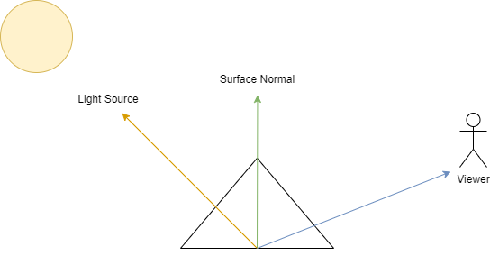Blinn-Phong Lighting Model
The Blinn-Phong Lighting Model is an updated version of the Phong Model and uses a Halfway Vector to lower the expense of calculation. The halfway vector sits halfway between the lighting source vector and the viewer vector. This model then lets you simulate specular reflection with less resources.
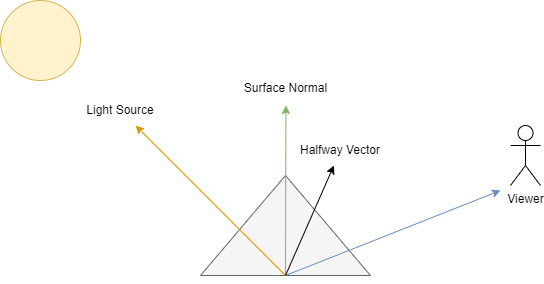1. How to create a shader with shader graph
Be sure that you have the shader graph package installed. Then all you need to do is right-click in your project and navigate to shader graph. From there you can choose what you want to start as a base line for creating the shader.
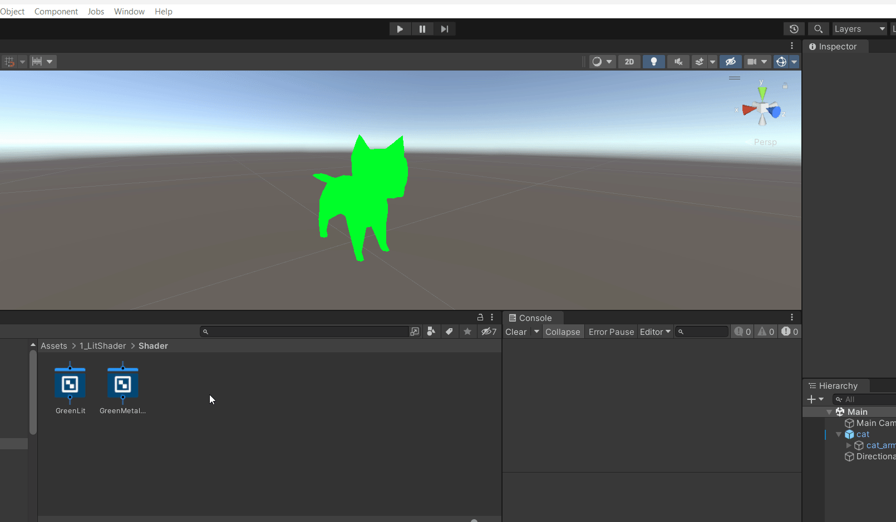2. Working with a blank shader graph
Create a shader similar to 1. Create a Shader, but this time choose 'Blank Shader Graph'
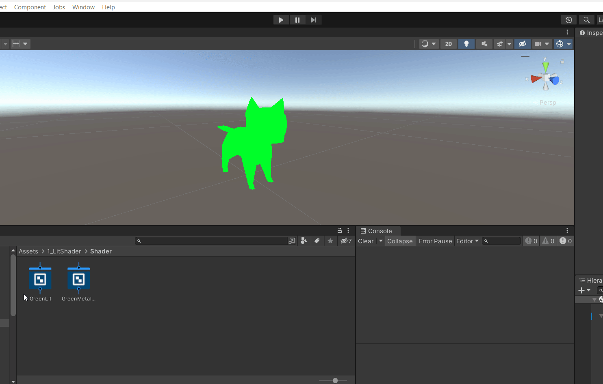To open the shader graph. Just double click the shader you just created or click the 'Open Shader Editor' in the inspector.
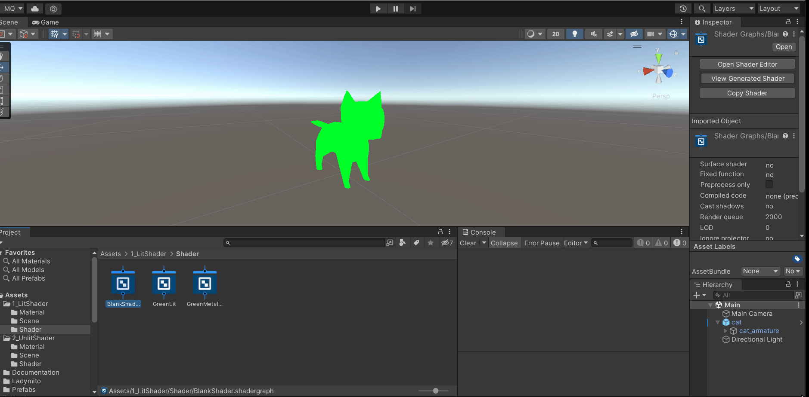To make the shader work, you need to set the 'Active Targets' which in this case, I'm setting it to 'Universal' for URP. This is going to change the nodes to set the shader up for the basic URP shader. We can then choose the base shader to build the newly created shader off of. I'm going to choose 'Unlit' for this example.
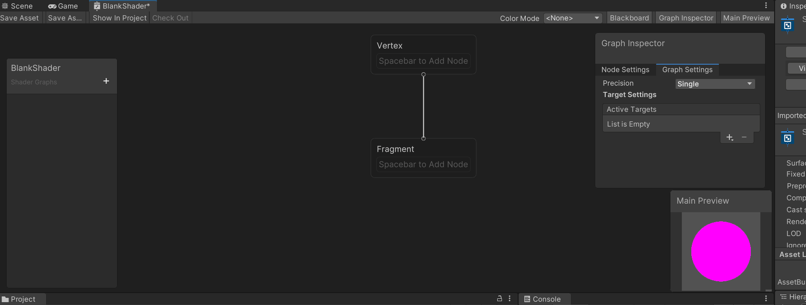3. How to create a basic color shader
Using the unlit shader we made in 2. Working with a blank shader graph we are going to assign a color to the shader. It's also very important that we manually *save* the shader. We can do this by clicking the 'Save Asset' button on the top left of the graph.
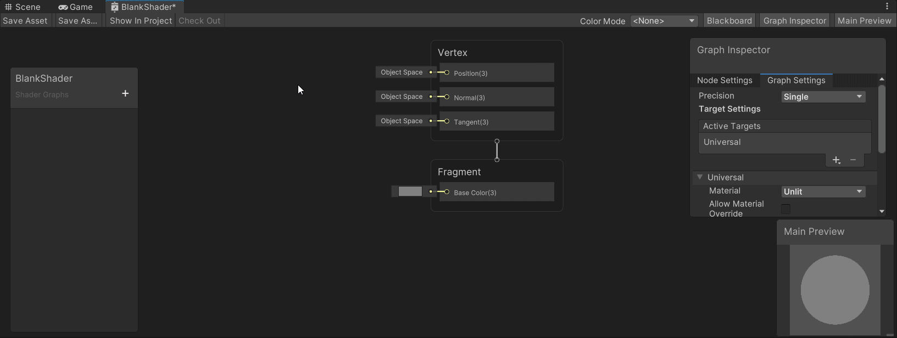4. How to see how the shader will look in the preview
To adjust the preview to reflect how the shader will look on our mesh, we can right-click the preview window and assign our desired mesh.
We are going to choose 'Custom Mesh' and then choose the mesh we want. You can then rotate the preview by holding the left-mouse button and moving the mouse.
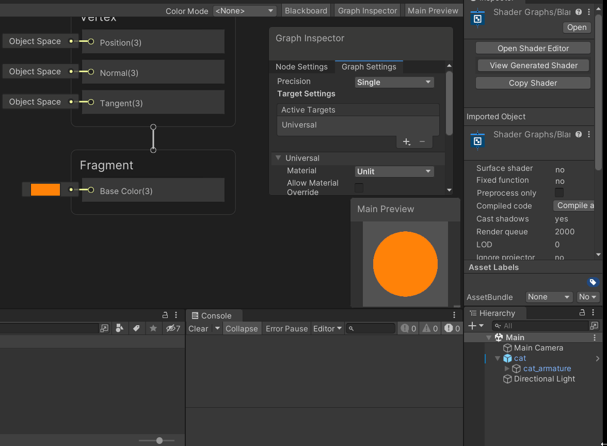5. How to assign the shader to an object
We can utilize shaders by creating materials. We first need to create a material, then we can assign it the shader of our choice.
We can find the shader we made under 'Shader Graph' in the options.
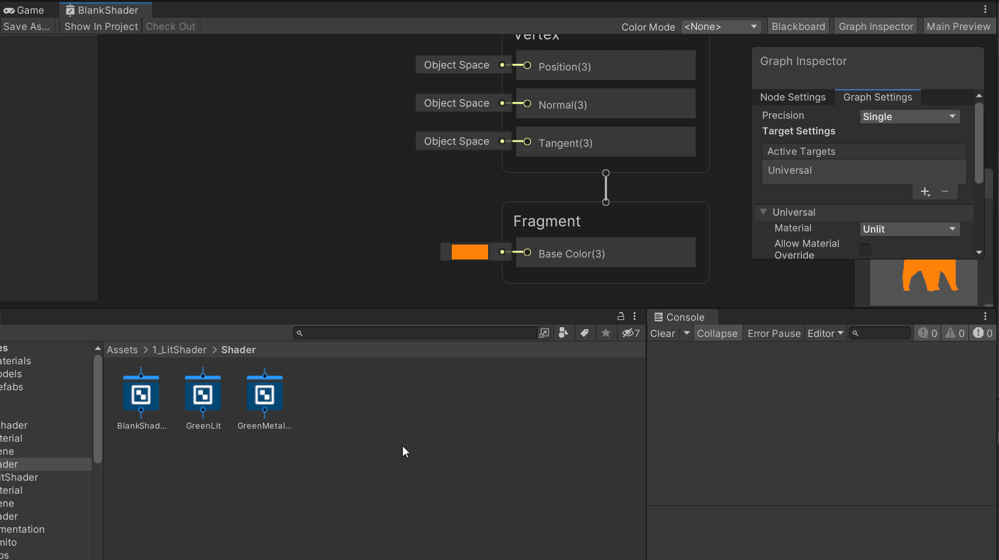 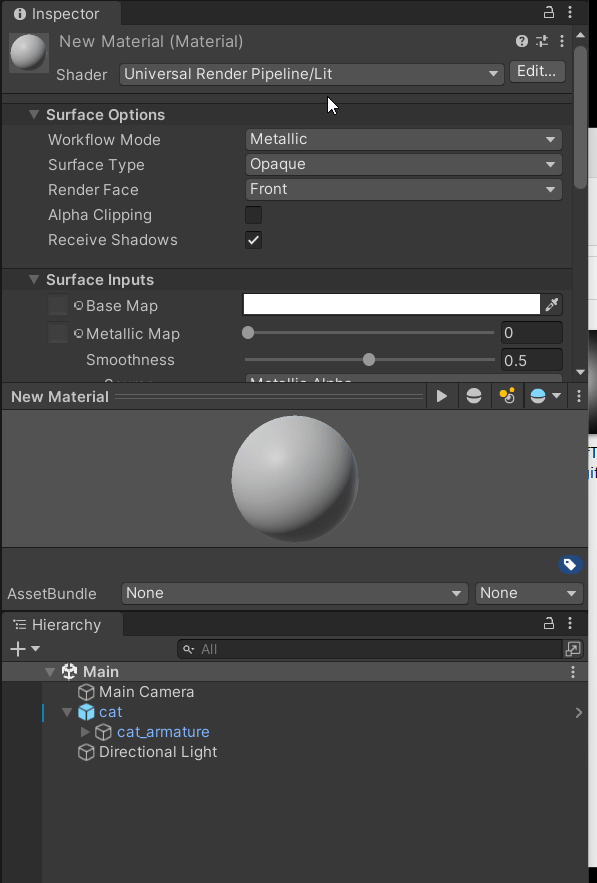 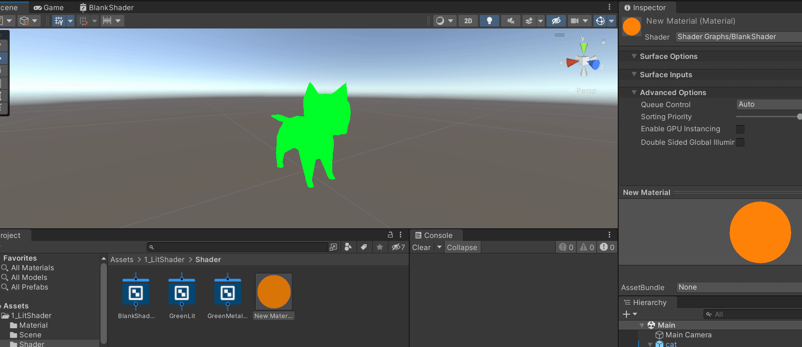6. How to expose a variable from the shader to be able to set it from the material
So sometimes it's easier to change stuff like color from the material rather than opening and editing the shader in shader graph. We can do this by creating a variable that will hold the color. Then we assign the variable to the proper parameter in the shader.
We can create variables in the shader graph throught the 'Blackboard' window. To create a variable for color, we are going to click the plus button and then choose color.
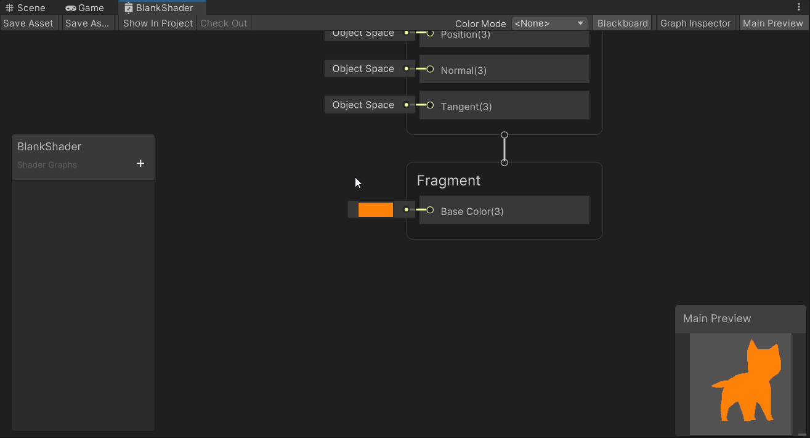We then just need to drag the variable into the shader graph and then connect it to the appropriate spot.
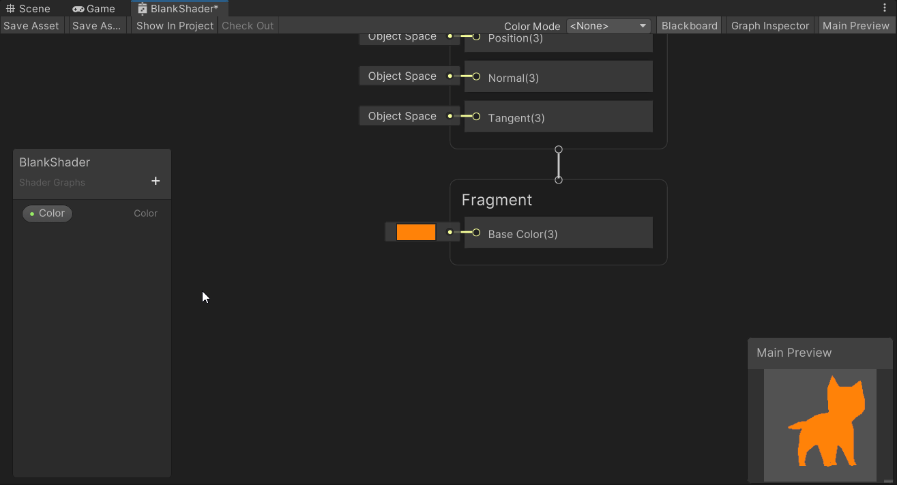
In the graph inspector, we can change the name and settings, but most importantly we can choose to expose the variable. When a variable is exposed, it can be changed by the material using that shader. You can easily tell if a variable is exposed by if the variable has a green dot next to its name.
Now we should be able to set the base color from the material instead of inside the shader graph.
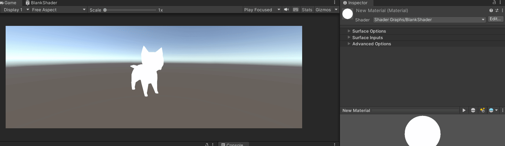7. How to create a custom diffuse lit shader
This section will step you through creating a custom diffuse lit shader using the Lambert Lighting Model and equation.
First I’m going to create a new unlit shader for URP. Then I’m going to change the preview model to the current model I’m working with.
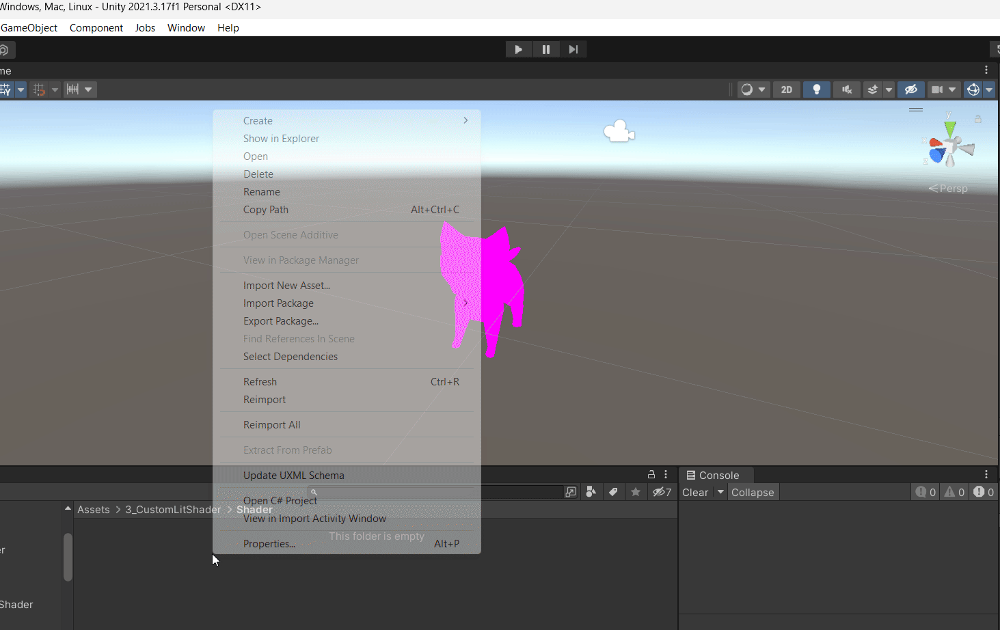 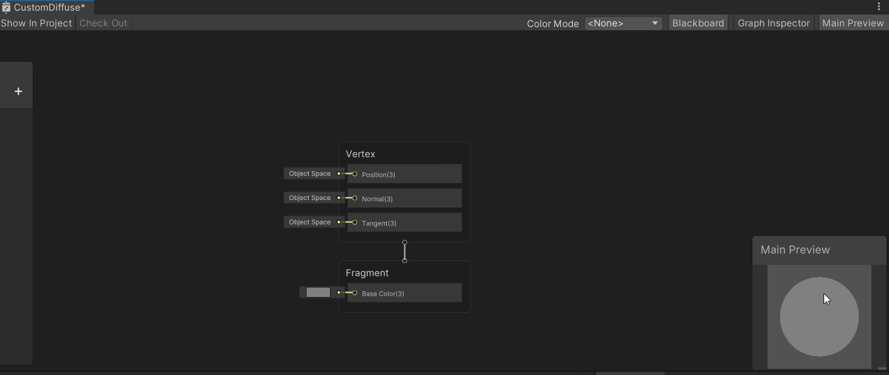Now we will need to create some shader variables for the equation. These will be a Color variable for the color, a Vector3 variable for the light source, and a float variable for the strength.
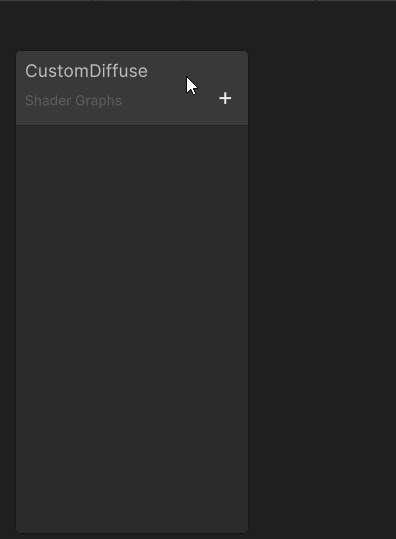Next we will need to get the Normal Vector of the object and use the Dot Product node to calculate the dot product of the normal vector and the light source vector.
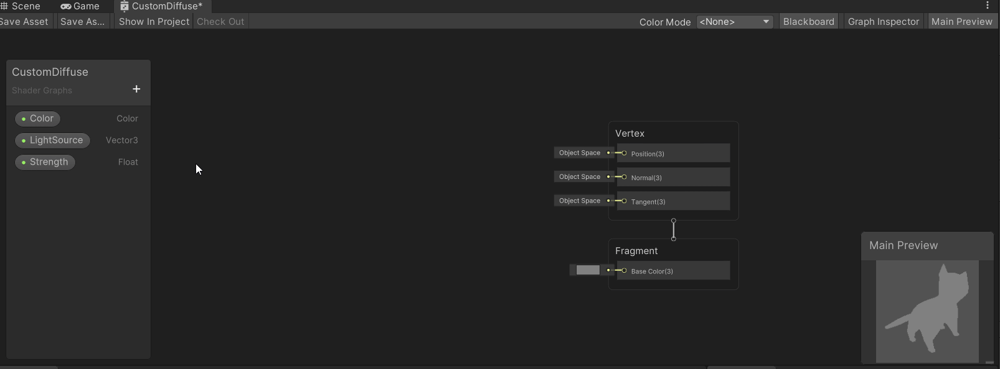To make this easier to see in the shader graph, I’m going to assign a value to both the Color and LightSource variables.
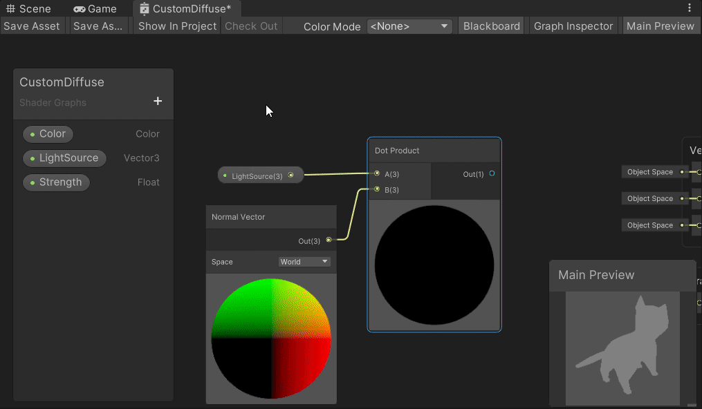At any point, you can also connect the current node to the Base Color section of the master stack to see how the shader will look on the selected model.
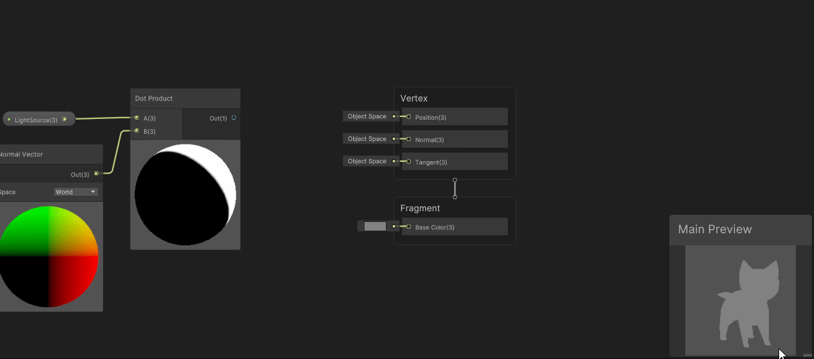We then need to create a multiply node to multiply the dot product by the color. Then we create another multiply node to multiply that by the strength variable.
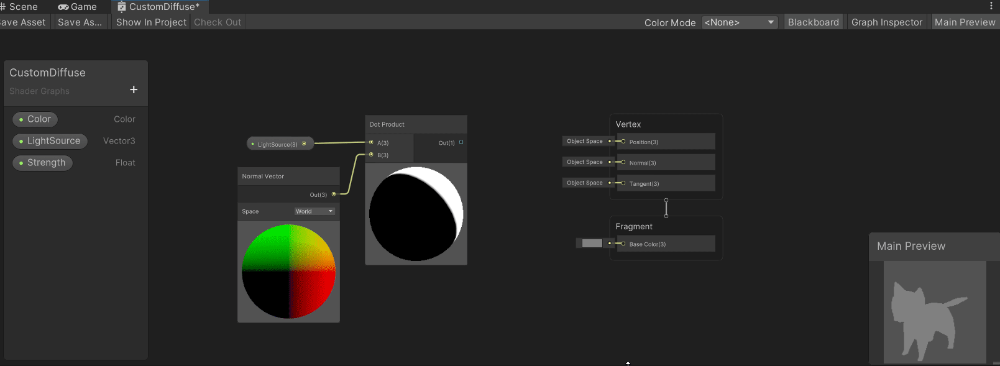After all that we can then connect the final product to the base color section of the master stack.
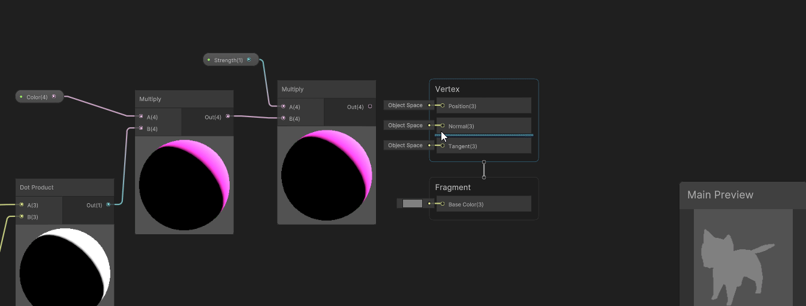After we create a new material, assign the shader, and attach that material to an object in our scene we can now adjust every variable in the inspector for our custom diffuse shader.
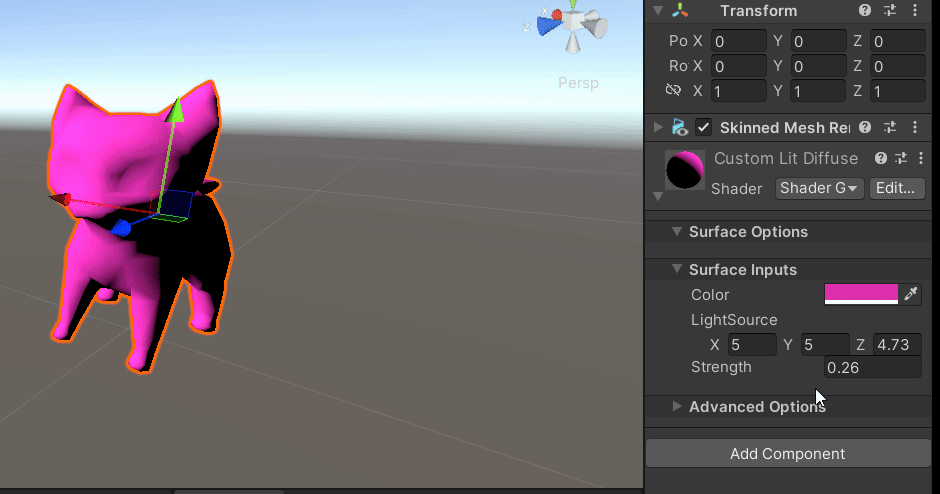Definitions
A non alphabetical grouping of all the terminology explained.
Lighting
- Ambient Light: Background light that doesn't come from any specific source.
- Diffuse Light: When light, coming from a light source, illuminates object geometry. This gives the object depth and volume.
- Specular Light: When light, coming from a light source, bounces off a surface and back towards the viewer. This gives the perception of shiny objects
Shader Pipeline
- Back-Buffer: an image that the user won't see but is where video cards draw objects. This keeps unfinished results from being viewed by the user
- Front-Buffer: the image that the user does see. This image is the finished results from the back-buffer.
Shaders
- Shader: a program coded in a video card language to affect the way an object is rendered.
- DirectX: a graphics library
- Vulcan: a graphics library
- OpenGL: a graphics library
- HLSL: High-Level Shader Language, the DirectX shading language with support for Vulcan
- GLSL: OpenGL Shading Language, the OpenGL shading language with support for Vulcan
- CG: C for Graphics, a shading language that can output either HLSL or GLSL
- Shader Graph: a visual language for creating shaders in Unity that will automatically output in HLSL or GLSL based on the project and build settings.